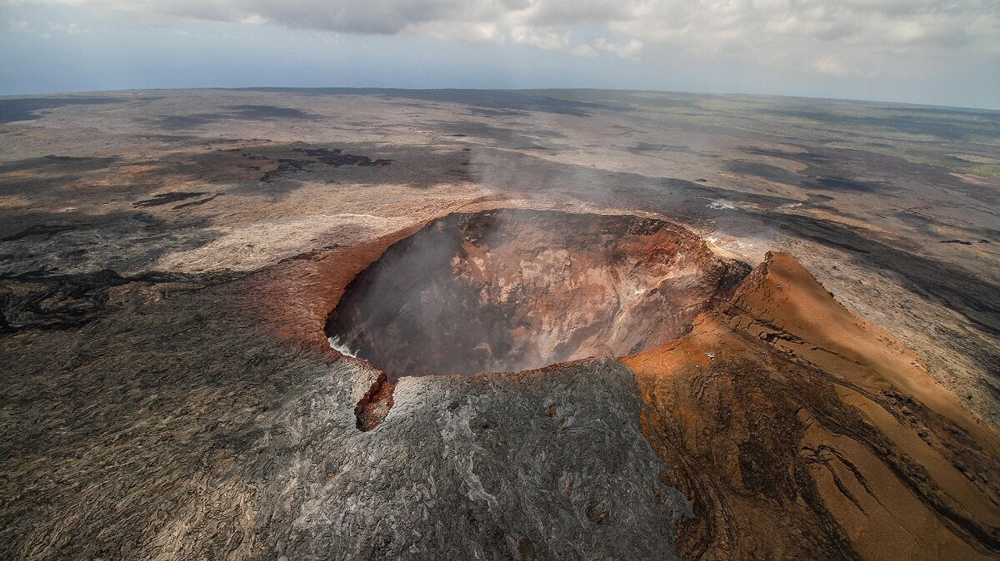
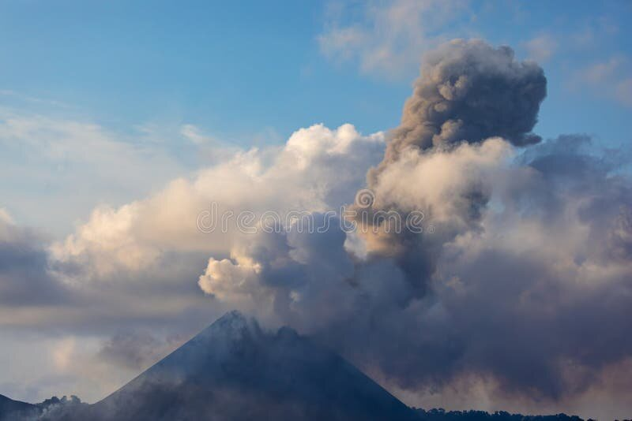

Projet HTML / CSS — Sciences de la Terre
Les Volcans
Des rivières de lave aux nuées ardentes : découvrez comment la Terre libère sa chaleur interne et pourquoi chaque volcan a son propre caractère.
Qu'est-ce qu'un volcan ?
Un volcan est une ouverture de la croûte terrestre par laquelle s'échappent du magma, des gaz et des fragments de roche. En surface, le magma prend le nom de lave : il se refroidit, s'accumule et construit peu à peu un relief, souvent en forme de cône.
Tous les volcans ne se ressemblent pas. La viscosité de la lave et sa teneur en gaz décident de tout : une lave fluide s'écoule en longues rivières de feu, tandis qu'une lave pâteuse emprisonne les gaz et libère sa pression dans des explosions violentes.
- Cheminée : conduit qui relie la chambre magmatique au cratère.
- Cratère : dépression circulaire au sommet du volcan.
- Nuée ardente : avalanche de gaz brûlants, de cendres et de roches.
- Panache : colonne de cendres et de gaz projetée dans l'atmosphère.

Les quatre grands types d'éruptions
Cliquez sur un type d'éruption pour accéder à sa fiche détaillée sur la page Types d'éruptions.
-
1
Le type hawaïen
Lave très fluide et pauvre en silice. Éruption calme et effusive : de longues rivières de lave sans explosion violente.
Effusive -
2
Le type strombolien
Lave fluide à moyennement visqueuse. Éruption mixte, avec coulées de lave et fontaines de lave régulières.
Mixte -
3
Le type vulcanien
Lave visqueuse et riche en gaz. La cheminée se bouche, la pression monte puis explose violemment.
Explosive -
4
Le type peléen
Lave extrêmement visqueuse. Un bouchon se forme au sommet : les nuées ardentes dévalent alors les pentes à grande vitesse.
Destructrice

Vivre avec les volcans
Les volcans sont à la fois une menace et une richesse. Leurs sols, riches en minéraux, comptent parmi les plus fertiles de la planète, et la géothermie qu'ils fournissent alimente des centrales électriques en Islande, au Kenya ou en Nouvelle-Zélande.
Mais ils imposent aussi une surveillance constante : capteurs sismiques, mesure des déformations du sol et suivi des gaz permettent aujourd'hui de prévoir la plupart des éruptions et d'évacuer les populations à temps.
En France, une page de référence recense les différents types de volcans et leurs origines ; les fiches de la page suivante s'en inspirent.
Découvrir les records mondiaux